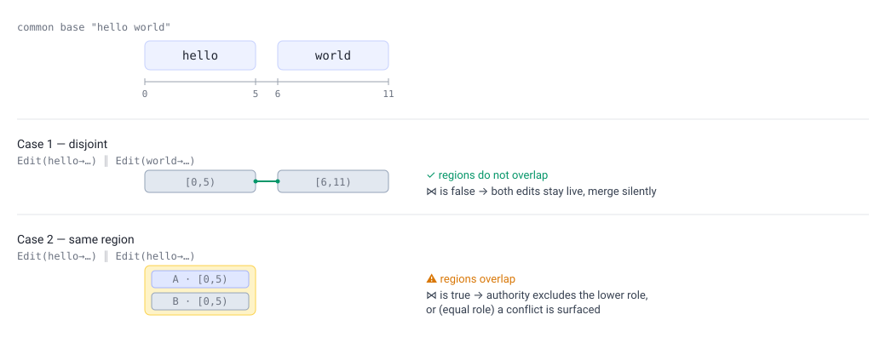
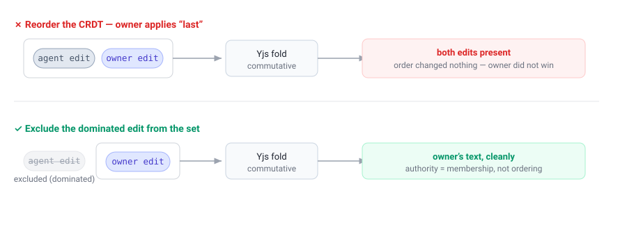

Authority-Ordered Convergent Merge (AOCM)
A merge layer for local-first collaboration between humans and AI agents.
This document explains the idea behind knock-knock’s conflict layer the way a paper would: the problem, the core concept, the small amount of algebra that makes it work, worked examples, and an honest account of what we deliberately left out. It is a conceptual companion to the implementation in
ledger/artifacts/versionable.ts, not a formal specification.
1. The setting
knock-knock lets several actors edit the same files at the same time. Some of those actors are people; some are AI coding agents working on a person’s behalf. They do not share a screen and they do not take turns — an agent may be rewriting a function while its owner edits the same file from a laptop, and a second agent on a second machine edits a third copy. Each machine keeps its own local log of what happened; there is no shared cloud database that everyone reads from. (That was a deliberate goal: local-first, drop the hosted Postgres.)
The hard question this raises is the oldest one in collaborative editing:
When two edits happen concurrently, what is the resulting document — and will every machine agree on it, even though no machine has authoritative state?
CRDTs (we use Yjs) answer the mechanical half: concurrent edits to different parts of a file can be merged automatically and deterministically. But CRDTs are deliberately egalitarian — they merge everything, commutatively, with no notion of who made an edit or whether one edit should win. In a setting where an owner and their agent edit the same line, “merge both” is the wrong answer. The owner should win, quietly, without a popup. And when two peer agents genuinely collide, a person should decide — not a coin flip.
AOCM is the thin layer that adds authority and conflict on top of the CRDT, while keeping the one property the local-first setting cannot live without: every replica converges to the same document from the operations alone.
2. The core idea in one paragraph
Treat the document’s state as a pure fold over an immutable log of edit operations. Order the operations by a deterministic total order — authority first, content-hash to break ties. Walk that order and decide which operations are live: an operation is dropped (excluded) if an earlier, higher-or-equal operation both overlaps the same region of text and is concurrent with it. Fold only the live operations through the CRDT. Because the order and the exclusion test are computed purely from immutable fields every machine already has, every machine derives the same live set — and therefore the same document — with no coordinator, no shared database, and no mutable “is this still alive” flag. A genuine collision between two equal-authority peers is the one case the fold cannot silently resolve; it is surfaced as a first-class conflict, and is later resolved by an ordinary higher-authority operation that the total order simply floats to the top.
The single non-obvious move — the thing that makes it correct — is in §4.
3. The model and its small algebra
3.1 Operations
Every edit is an immutable, content-addressed operation o. The fields AOCM
reads are all fixed at creation time:
| Field | Meaning |
|---|---|
role(o) | the social role of the actor: owner, human, or agent |
hash(o) | the content hash of the operation (globally unique) |
parents(o) | the operations this one was created after (its causal history) |
intent(o) | what the edit does: Write(content) or Edit(old → new) |
ops(o) | the CRDT (Yjs) update bytes that actually apply the change |
Roles carry a fixed numeric rank:
ρ(owner) = 3 ρ(human) = 2 ρ(agent) = 1
The operations of one artifact form a DAG via parents (knock-knock’s
append-only “ledger”). Nothing here is ever mutated — operations are only ever
added.
3.2 The total order ≺
Sort operations by authority descending, then hash ascending:
o₁ ≺ o₂ ⟺ ρ(o₁) > ρ(o₂) (strictly higher authority wins)
or ρ(o₁) = ρ(o₂) and hash(o₁) < hash(o₂) (else lower hash)
o₁ ≺ o₂ reads “o₁ outranks o₂.” Two properties matter:
- It is total. Because hashes are unique, every pair is comparable. There are no ties, and crucially no antichains — the failure mode of the partial-order design we abandoned (§7).
- It uses only immutable, on-operation fields. No timestamps, no “how deep in the history” counts, nothing that depends on which operations a machine happens to have seen so far. Two machines holding the same two operations always order them the same way.
The order is used for exactly two things: deciding exclusion (§3.5) and rendering conflict branches in a stable order. It is never used as the order in which the CRDT applies edits — that would be both unnecessary and wrong (§4).
3.3 Concurrency ∥
Two operations are concurrent if neither is in the other’s causal history:
o₁ ∥ o₂ ⟺ o₁ ∉ ancestors(o₂) and o₂ ∉ ancestors(o₁)
Concurrency is what makes a contention possible. If you edited a line, saw my edit, and then edited again, your second edit is a descendant of mine — not a conflict, just history. Only concurrent operations can interfere.
3.4 Regions and interference ⋈
This is the part that decides whether two concurrent edits actually clash. We compute it on the common base — the text the two edits both started from (the fold of their shared ancestors).
Each intent touches a half-open byte region of that base text b:
region(Write(_), b) = [0, |b|) a whole-file write spans everything
region(Edit(old→_), b) = [i, i + |old|) where i = b.indexOf(old)
= [0, |b|) if old is not found (fail safe)
Two concurrent operations interfere iff their regions overlap (or both are whole-file writes):
o₁ ⋈ o₂ ⟺ both are Write (two whole-file rewrites are irreconcilable)
or region(o₁).lo < region(o₂).hi
and region(o₂).lo < region(o₁).hi (half-open overlap)
A picture, on the base "hello world":

Interference is a pure function of immutable intents and the common base, so
it too is replica-identical. (Adjacent regions that merely touch at a boundary —
[4,9) and [9,15) — do not interfere; the intervals are half-open.)
3.5 Dominance = exclusion, and the live set
Now the only decision rule. Operation o₁ dominates o₂ when it outranks it
and genuinely clashes with it:
o₁ dominates o₂ ⟺ o₁ ≺ o₂ and o₁ ∥ o₂ and o₁ ⋈ o₂
To compute the live set L, walk the operations in ≺ order and greedily keep
each one unless something already kept dominates it:
LIVE(O): # O = every operation for this artifact
sort O by ≺ # authority desc, hash asc
kept ← []; conflicts ← {}
for o in O (in ≺ order):
d ← the first y in kept with (y ∥ o) and (y ⋈ o) # an interfering concurrent peer
if d is none:
kept.append(o) # nothing clashes — o is live
else if ρ(d) = ρ(o):
conflicts.add({d, o}) # EQUAL authority → a genuine conflict
# o stays excluded; the lower-hash branch d remains live
else:
pass # higher authority d wins — o excluded SILENTLY
return kept, conflicts
The document state is then just the CRDT fold of the live set, in any order:
STATE(O) = fold_CRDT( LIVE(O).kept )
Three outcomes fall out of this single rule, with no policy knob:
| Situation | What LIVE does | What the user sees |
|---|---|---|
| Disjoint regions (any roles) | both kept | both edits merge, silently |
| Same region, different role | lower-role op excluded | higher role wins, silently |
| Same region, equal role | one kept, pair recorded in conflicts | a conflict card to resolve |
The whole pipeline, end to end:
flowchart TB E["operation admitted<br/>(created locally or arrived from a peer)"] --> S["sort all ops by ≺<br/>(role desc, hash asc)"] S --> L["derive live set:<br/>exclude each op a kept,<br/>concurrent, interfering op dominates"] L --> F["CRDT folds the live set<br/>(order-independent)"] F --> Q{"equal-role interference<br/>survives?"} Q -->|"no — disjoint, or<br/>resolved by authority"| D["converged state<br/>(identical on every replica)"] Q -->|"yes — same region,<br/>equal role"| C["first-class conflict<br/>→ conflict card"] C --> R["owner resolves =<br/>ordinary higher-authority op<br/>the order floats to the top"] R --> L
4. The one subtle move: exclude, don’t reorder
Here is the mistake that is easy to make and that we made first: “sort the operations by authority and let the CRDT apply them in that order, so the owner’s edit lands last and wins.”
It does not work, because the CRDT is commutative. Yjs merges a set of updates to the same result regardless of the order you apply them in — that is the whole point of a CRDT. Applying the owner’s edit “last” changes nothing; the agent’s conflicting edit is still in the set, so the merged text still contains both. You cannot make one edit win by ordering a structure that ignores order.
So authority cannot be expressed as an ordering of the CRDT. It has to be expressed as membership: the dominated operation is left out of the set the CRDT folds at all.

This is why the total order ≺ and the CRDT fold order are two different orders that must never be conflated. ≺ decides who is in the live set; the CRDT folds that set in whatever order it likes. The total order does the deciding; the CRDT does the merging; and the two stay strictly separate.
A pleasant consequence: this is already what the codebase did when a draft was
manually “superseded” — it filtered the superseded edit out before folding. AOCM
keeps that exact mechanism and only changes its persistence: from a mutable
superseded flag written into a column, to a predicate derived on the fly
from immutable operations. “Overturn the merge gate” turned out to mean “keep the
gate’s arbitration; change how it is stored.”
5. Why it converges (the informal argument)
We want: two machines holding the same set of operations produce the same document. The argument is short:
LIVE(O)reads only immutable fields —role,hash,parents,intent. None of them is mutated, and none depends on arrival order or on which subset a machine has seen.- The sort ≺ is total (unique hashes), so the walk visits operations in the same sequence on every machine. No antichains, no “it depends.”
- The interference test ⋈ is computed on the common base, itself a fold of the shared ancestor set — again immutable and shared.
- Therefore
LIVE(O)returns the same live set and the same conflict set on every machine that holdsO. - The CRDT folds that identical live set to an identical document, because it is order-independent.
So convergence does not require a coordinator, a lock, a clock, or a shared database. It requires only that the machines eventually hold the same operations — which is the job of a separate sync transport (§7), not of the merge. A machine missing one branch simply converges the moment that branch arrives; the fold is recomputed and the answer is the same as a fresh replay.
Notably, there is no mutable lifecycle flag in the merge path. The original
divergence bug was exactly that a “this edit is superseded” UPDATE never
propagated between machines (Postgres NOTIFY fires on INSERT, not UPDATE). AOCM
removes the UPDATE entirely: supersession is derived, and the only thing that
ever crosses the wire is an immutable INSERT.
The same pattern now closes the divergence for the other superseding paths too
— turns, approvals, knowledge — which still keep a lifecycle column outside the
merge (§7). Those concepts can’t drop the UPDATE (their liveness is genuinely
stateful), so instead the apply-supersession synchronization re-derives it on
each peer: the winner interaction carries its losers in an immutable
supersedes field, that INSERT crosses NOTIFY, and a peer receiving the winner
re-applies the lifecycle change locally. The local UPDATE stays for fast local
reads; convergence rides the operation the store already propagates. The one
residual limit is shared by all synced state, not specific to the merge: a
NOTIFY missed during a listener disconnect heals on the peer’s next
restart-replay, not in the moment.
6. Worked examples
All examples start from the base text "hello world" (|b| = 11; "hello" is
[0,5), "world" is [6,11)).
AE1 — Disjoint edits merge silently
Agent A: Edit(hello → HELLO), region [0,5). Agent B: Edit(world → WORLD),
region [6,11).
A ⋈ B? 0 < 11 ✓ but 6 < 5 ✗ → no interference. Both live.
State: "HELLO WORLD". No card. (This is the common case, and it is fully
autonomous — nobody is interrupted.)
AE2 — Authority wins, silently
Agent: Edit(hello → HI). Owner: Edit(hello → HEY). Both region [0,5) → they
interfere. Order: ρ(owner)=3 > ρ(agent)=1, so the owner sorts first and is kept.
The agent is concurrent + interfering + lower rank → excluded silently.
State: "HEY world". No card, no popup. The owner’s intent simply stands.
AE3 — Equal peers collide → a real conflict
Agent A: Edit(hello → HI). Agent B: Edit(hello → YO). Same region, equal rank.
The lower-hash branch (say A) is kept; the pair {A, B} is recorded as a
conflict. State: "HI world" and a conflict card offering “Take A / Take
B / Write your own.” Each branch row shows what that branch actually contains
— the captured intent, e.g. the replacement text or a Write snippet, not an
opaque “~N bytes” — so Take A vs Take B is a real choice. The fold picked a
deterministic provisional text so every replica shows the same thing, but it
does not pretend the conflict is resolved. “Write your own” admits the owner’s
own edit, which (being owner-role and concurrent) dominates both branches and
clears the region — the card closes (this is AE4 with the owner authoring a
fresh branch instead of copying one).
AE4 — Resolution is just another operation
The owner picks branch A on the card. We do not flip any flag. We admit an owner-role operation that is a copy of A — same intent, same parents, so it is concurrent with both A and B. Now re-derive: the owner-copy outranks both agents, is concurrent with and interferes with both → both agent branches are excluded silently, and since the exclusions are by higher authority, the conflict set is now empty. State: A’s text; conflict cleared. A second machine that later receives this same owner-copy operation re-derives the identical result — no UPDATE, no message, just one more INSERT in the log.
AE6 — The override still notifies a human
Because supersession is now derived rather than written, we must not lose the
“your draft was overridden” notice that used to ride on the flag. So a resolution
(or any authority exclusion that matters socially) also emits an ordinary
knowledge.append INSERT into the losing agent’s inbox. That INSERT propagates
like any other operation and triggers the existing direct-message-the-owner path.
Derivation removed the flag; it did not remove the courtesy.
AE7 — A whole-file Write clashes with everything
Agent A: Edit(world → WORLD), region [6,11). Agent B: Write("totally new"),
region [0,11) (a Write spans the file). They overlap → interfere. Equal rank →
conflict card. But if the Write were the owner’s, it would dominate A
silently and the state would be "totally new". A whole-file rewrite is honest
about being a whole-file rewrite: it contends with everything.
7. What we deliberately discarded (and why)
A core concept is only as trustworthy as its account of its own limits. These are the things we considered and chose not to do — each is a real tradeoff, not an oversight.
Whole-file granularity (coarse exclusion). Today an operation’s region for exclusion is whole-op: when a higher-role edit interferes, the entire lower op is excluded, not just the overlapping span. The richer design — true interval anchors, where exclusion is scoped to the exact overlapping bytes — is deferred. The honest mitigation: the interference test is already region-aware, so disjoint edits still merge regardless; only genuine same-region collisions lose the whole lower op. We pay coarseness exactly where two people are already fighting over the same span, which is the least surprising place to pay it.
Binary / non-text Writes. Capture is for text. A Write of non-UTF-8 content
(detected by a NUL byte) would be mangled through Yjs’s UTF-16 Y.Text and then
write-back would overwrite the real file with the corrupt round-trip — so capture
skips it rather than corrupt it. The scope is honestly Claude-Code-shaped text
Edit/Write; binary is out of scope, not silently handled.
Causal chaining onto the live set only. A new edit chains its parents onto
the artifact’s current edits so a sequential edit is a descendant (history, not
conflict, per §3.3). Earlier this chained onto every slice hash — including
edits that were dominated or sitting in a conflict. That made the new edit a false
descendant of a loser, which could mask a real concurrency. It now chains onto the
live (kept) hashes only, so it descends from the live text and stays genuinely
concurrent with any peer it should contend with. (The fold, the conflict card, and
write-back all share one membership predicate for “what counts as a versionable
edit,” so they can never silently disagree about the slice they each read.)
The partial-order “containment lattice.” Our first cross-machine design ordered operations by set-containment (“a superset of edits dominates a subset”). It failed: two agents extending the same history produce maximal sets that are neither a subset of the other — an antichain — and an antichain has no winner, so different machines could pick different text. We replaced the partial order with a total order whose final key is the content hash, which makes every pair comparable by construction. Telling this failure is the point: the content-hash tiebreak is not arbitrary decoration, it is the thing that closes the antichain.
A mutable lifecycle flag for the merge. We kept the lifecycle column for
the concepts that legitimately use it (turns, approvals, watches, …) and removed
it only from the merge path. The merge’s liveness is derived. The reason is
exactly the local-first one: a mutated flag is per-machine state that does not
propagate, and the whole design is “converge from immutable operations alone.”
The hold / auto policy knob. An earlier design had a per-room switch:
auto-merge concurrent edits, or hold them for the owner. Once interference became
region-overlap, the knob had nothing to decide — disjoint edits always merge,
same-region collisions always card — so we dropped it. Uniform behavior, one
fewer thing to configure or get wrong.
Cryptographic trust. The total order’s authority key (role) is unsigned.
That is safe under our stated trust target — a single operator syncing only
their own machines, where there is no adversary to forge role: owner. In a
future where operations cross between operators, a forged owner role would win
silently; closing that needs signing, and signing belongs to the paired sync
transport, not to the merge. We left the order key signing-ready and the
boundary explicit rather than pretending the merge is Byzantine-tolerant.
Snapshots / bounded replay. We re-fold the whole operation slice for an artifact on every change. A snapshot/checkpoint scheme would bound replay cost, but it is a performance optimization, not a correctness one, and we have not measured a replay-latency problem. Deferred until it is one.
The sync transport itself. AOCM is the merge layer. How operations travel between local stores (anti-entropy have/want exchange, an optional dumb store-and-forward relay for the closed-laptop case) is a separate, paired concern. AOCM assumes only that operations eventually arrive; it is otherwise transport-agnostic. Dropping the hosted database is finished by that transport, not by this layer.
8. Relation to prior art
AOCM is a deliberately small synthesis of ideas that already exist, chosen to fit a human + AI-agent collaboration setting:
- Matrix State Resolution v2 is the closest relative: authority-weighted
conflict resolution over an append-only hash-DAG, convergent on every replica
with no coordinator, via a total order
(power, origin_ts, event_id). We simplify it — static roles instead of mutable power levels (no duelling-admins failure class), and we card equal-authority collisions instead of auto-picking, which removes the need for a recency tiebreak. - eg-walker (Gentle & Kleppmann, 2025) — a deterministic order over concurrent operations via a stable, operation-carried tiebreak; its critical-version snapshots are the bounded-replay idea we deferred.
- Categorical patch theory / Pijul (Mimram & Di Giusto, 2013) — conflicts as first-class objects resolved by ordinary later patches, with order-independent merge. Our “resolution is just another operation the order floats to the top” is the same shape.
- Fugue / FugueMax (Weidner & Kleppmann, 2023) — informs why a pre-merge region-overlap test is the sound notion of interference, rather than comparing text after a merge.
- Byzantine / signed CRDTs (Kleppmann, 2022) — signing closes the forgeable-role gap, which is precisely the boundary we pushed to the paired transport.
The contribution is not a new CRDT or a new consistency proof. It is the framing: in a world where collaborators are humans and their agents, social authority is a first-class, immutable merge primitive, expressible as exclusion from a commutative CRDT’s input set, ordered by a hash-completed total order, so that autonomy is automatic for the common case and human judgment is reserved for genuine peer conflict — all converging locally, from immutable operations, with no shared database.
9. Pointers into the implementation
| Concept here | Where it lives |
|---|---|
Total order ≺, ROLE_RANK | ledger/interaction.ts, ledger/artifacts/versionable.ts (projectVersionable) |
Region + interference (region, ⋈) | ledger/artifacts/versionable.ts (regionOf, interferes) |
Live set / exclusion (LIVE) | ledger/artifacts/versionable.ts (projectVersionable) |
| “Admit, don’t arbitrate” for edits | ledger/admit.ts |
| Conflict surfacing | ledger/synchronizations/conflict-card.ts |
| Resolution as an ordinary op | ledger/resolve-conflict.ts |
| Override notice (the INSERT) | ledger/admit.ts (surfaceToInbox), ledger/synchronizations/dm-on-supersede.ts |
| Convergence / corpus / fuzz battery | ledger/aocm.test.ts, ledger/fold.test.ts |
| Requirements of record | docs/brainstorms/2026-06-09-anchored-patch-category-conflict-layer-requirements.md |